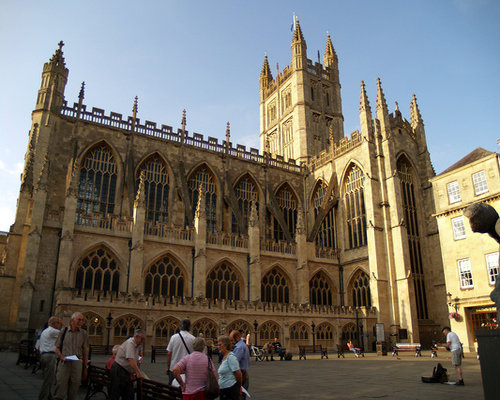
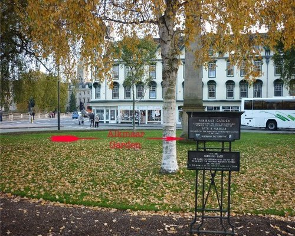
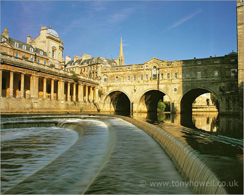
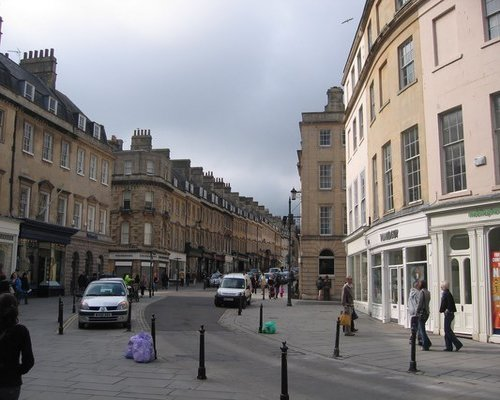
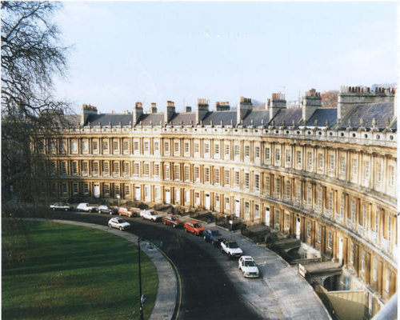
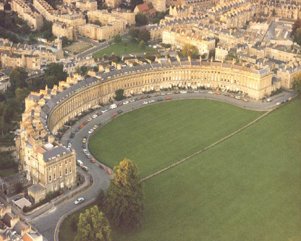
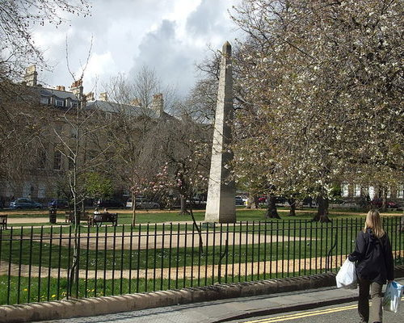
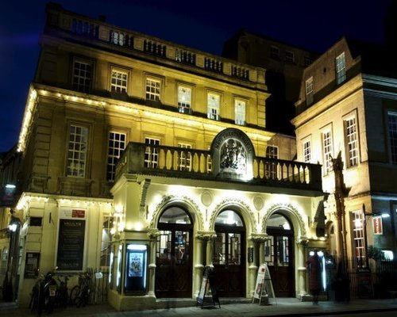
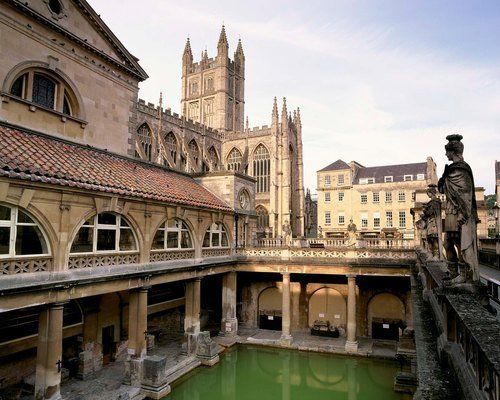

Now for the maths.
The Bath maths walk, is a cool way to show people the maths
all around them. It is a walking route all around the most
famouse and interesting parts of Bath, exploring them mathmaticaly.
Bath Abbey

Orange Grove

Pulteny Bridge

Milsom Street

The Circus

Royal Crescent

Victoria Park
Queen Square

Theatre Royal

Roman Baths and Pump Rooms
